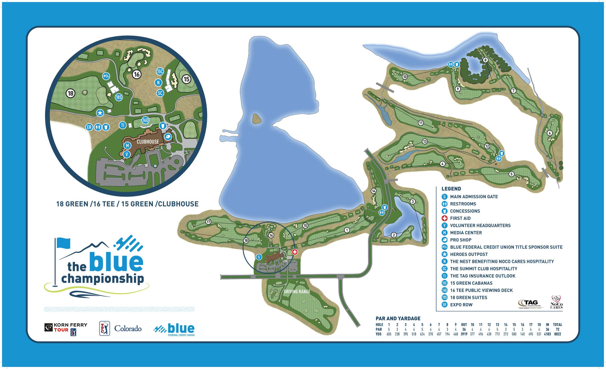
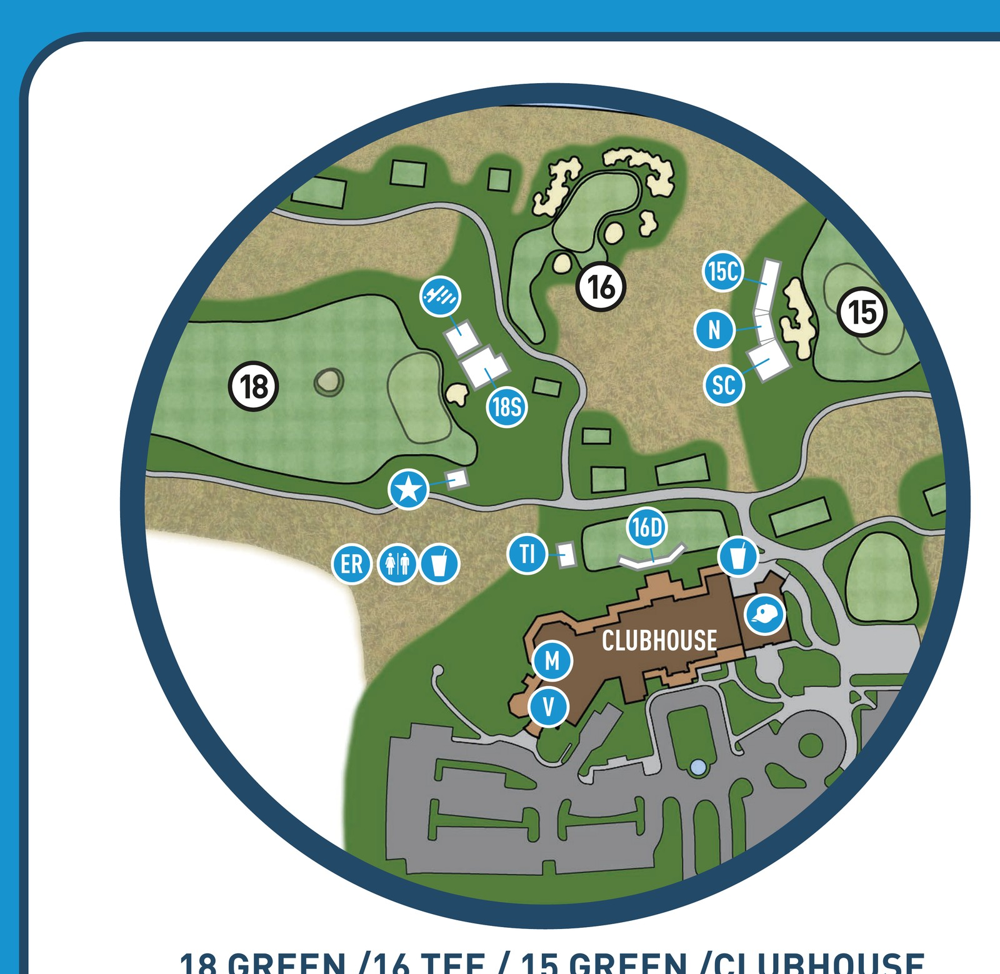

Official course overview. This illustration is not north-up and is currently a reference image. The tee and green GPS points have been preserved as alignment anchors for the future geographic overlay.

Clubhouse and Fan Zone detail. This is a schematic reference view, not a GPS map.
